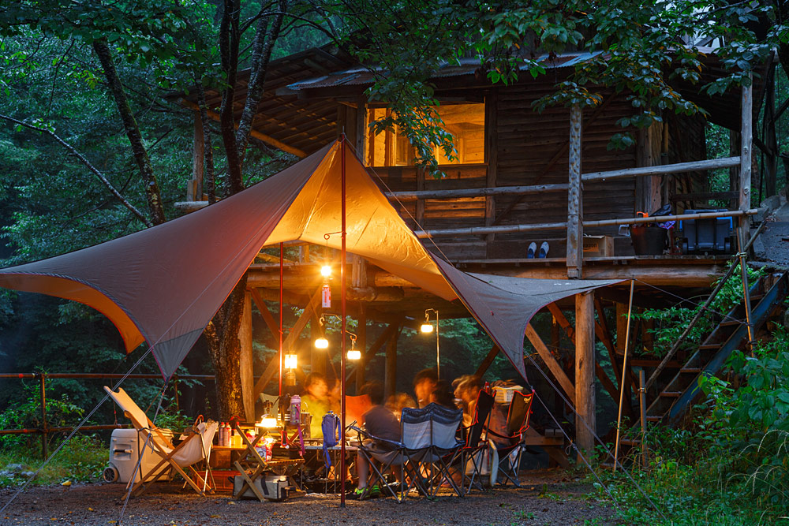
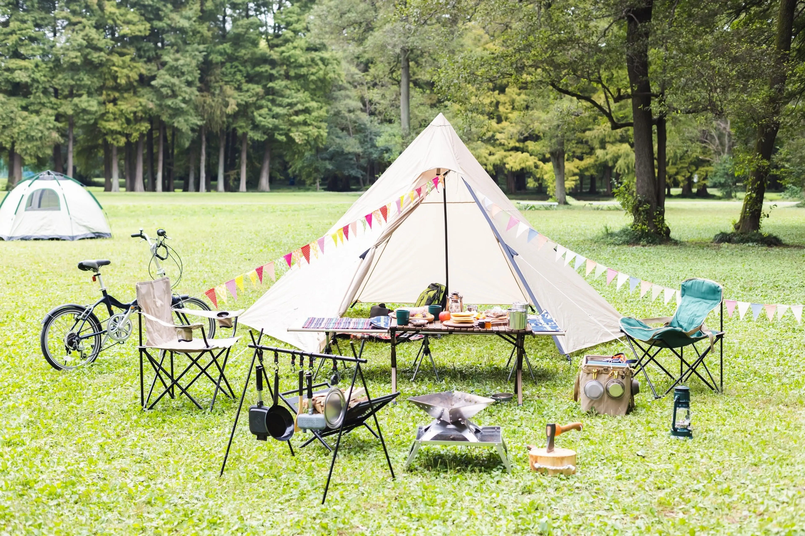
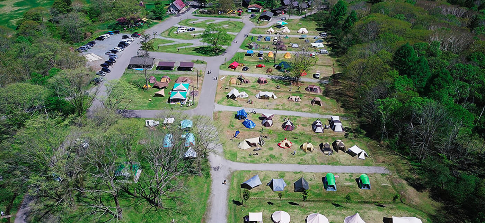
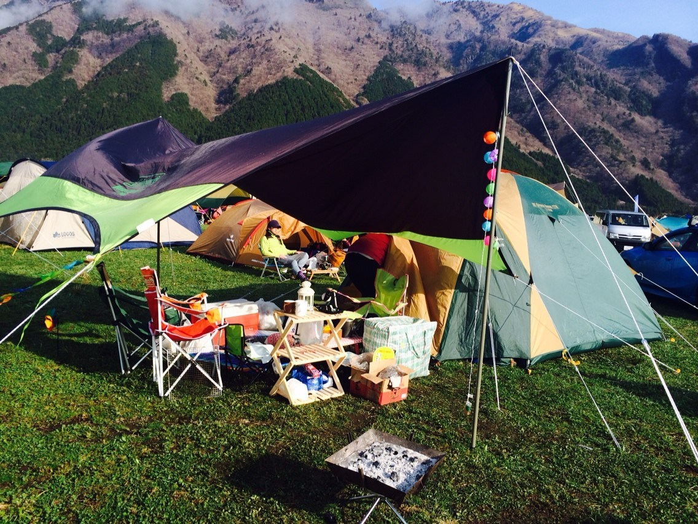
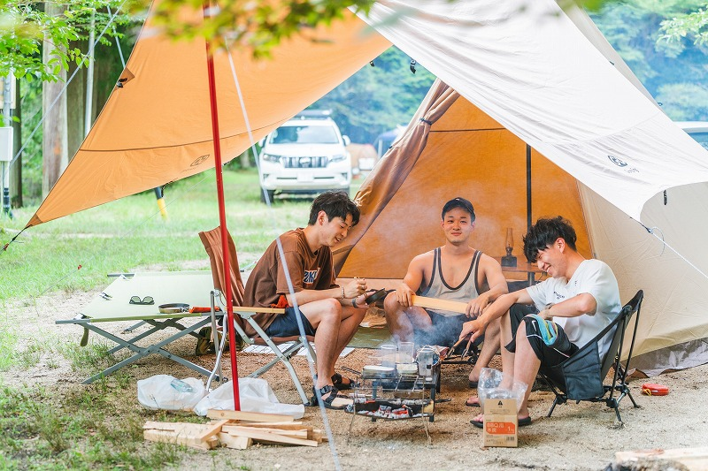

Camping ở Nhật Bản ngày càng trở nên phổ biến, không chỉ với người Nhật mà cả người nước ngoài đang sinh sống tại đây. Tuy nhiên, với những ai chưa từng đi camping, câu hỏi thường gặp nhất vẫn là: Camping ở Nhật có khó không?
Câu trả lời ngắn gọn là: không khó, nhưng có một số điều bạn nên biết trước khi bắt đầu để chuyến đi được thoải mái và dễ chịu hơn.

Camping ở Nhật có phổ biến không?
Camping là một phần khá quen thuộc trong văn hóa sống gần thiên nhiên của người Nhật. Hầu hết các bãi camping đều được quy hoạch rõ ràng, sạch sẽ và có quy định cụ thể.
Thông thường, các bãi camping ở Nhật sẽ có:
- Khu dựng lều được phân chia rõ ràng
- Nhà vệ sinh sạch sẽ
- Khu rửa tay, rửa đồ
- Bãi đỗ xe riêng
Nhờ vậy, camping ở Nhật thường an toàn và dễ tiếp cận hơn so với suy nghĩ của nhiều người mới.
Người mới hoàn toàn có đi camping được không?
Câu trả lời là có.
Rất nhiều người Nhật đi camping lần đầu khi đã trưởng thành, thậm chí có người đi camping một mình.
Với người mới, cảm giác lo lắng thường đến từ:
- Không biết chuẩn bị đồ gì
- Không biết dựng lều
- Sợ lạnh hoặc bất tiện
- Không quen sinh hoạt ngoài trời
Thực tế, nếu chọn đúng thời điểm và bãi camping phù hợp, trải nghiệm camping lần đầu ở Nhật thường nhẹ nhàng hơn tưởng tượng rất nhiều.
Camping ở Nhật khác gì so với Việt Nam?
Khác biệt lớn nhất nằm ở tính quy củ và kỷ luật.
Ở Nhật:
- Hầu hết bãi camping phải đặt chỗ trước
- Không cắm trại tự do
- Có giờ quy định giữ yên tĩnh (thường từ 21–22h)
- Rác phải được phân loại và xử lý đúng cách
- Không đốt lửa tùy tiện
Đổi lại, bạn sẽ có một không gian rất yên tĩnh, sạch sẽ và an toàn để nghỉ ngơi đúng nghĩa.
Cần chuẩn bị những gì cho lần đầu đi camping?
Với người mới, bạn không cần chuẩn bị quá nhiều. Những thứ cơ bản nhất thường gồm:
- Quần áo phù hợp với thời tiết
- Áo khoác giữ ấm cho buổi tối
- Đồ dùng cá nhân
- Giày thể thao hoặc giày đi bộ
Các vật dụng chuyên dụng như lều, túi ngủ, bếp, đèn… thường là phần khiến người mới lo lắng nhất. Tuy nhiên, hiện nay đã có nhiều hình thức hỗ trợ hoặc chia sẻ, giúp bạn không cần đầu tư quá nhiều ngay từ lần đầu.
Không có xe riêng thì có đi camping được không?
Phần lớn bãi camping ở Nhật nằm xa trung tâm thành phố, nên xe riêng là một lợi thế. Tuy vậy, nếu không có xe, bạn vẫn có thể:
- Đi cùng bạn bè có xe
- Thuê xe theo ngày
- Tham gia các hình thức camping có hỗ trợ di chuyển
Quan trọng nhất là lựa chọn phương án phù hợp với khả năng và trải nghiệm mà bạn mong muốn.

Ai phù hợp với camping ở Nhật?
Camping đặc biệt phù hợp với những người:
- Muốn tạm rời nhịp sống thành phố
- Thích thiên nhiên và không gian yên tĩnh
- Muốn trải nghiệm chậm rãi, không gấp gáp
Nếu bạn chưa từng đi camping, hãy bắt đầu từ những chuyến ngắn, thời tiết dễ chịu và bãi camping được quản lý tốt.
Camping không phải là thử thách, mà là một cách khác để nghỉ ngơi.
Điều quan trọng nhất là chọn cách bắt đầu phù hợp với chính mình.
Camp Nhà Thỏ luôn sẵn sàng đồng hành để bạn có chuyến camping nhẹ nhàng, an toàn và nhiều trải nghiệm đáng nhớ.